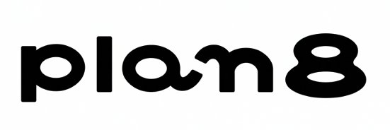

会社概要
- 会社名
- 株式会社plan8（プランエイト）
- 代表取締役
- 鶴岡英明
- 設立年月日
- 所在地
- 〒879-5502 大分県由布市挾間町向原16番地
事業内容
-
フリーペーパーの発刊
想いが伝わる、まちのイベントマガジンを企画・発刊しています。
-
外部CINO
外部の視点から企業のイノベーションを推進する、外部CINO（Chief Innovation Officer）サービスを提供しています。

プランエイト｜大分県由布市想いが伝わる、まちのイベントマガジンを企画・発刊しています。
外部の視点から企業のイノベーションを推進する、外部CINO（Chief Innovation Officer）サービスを提供しています。